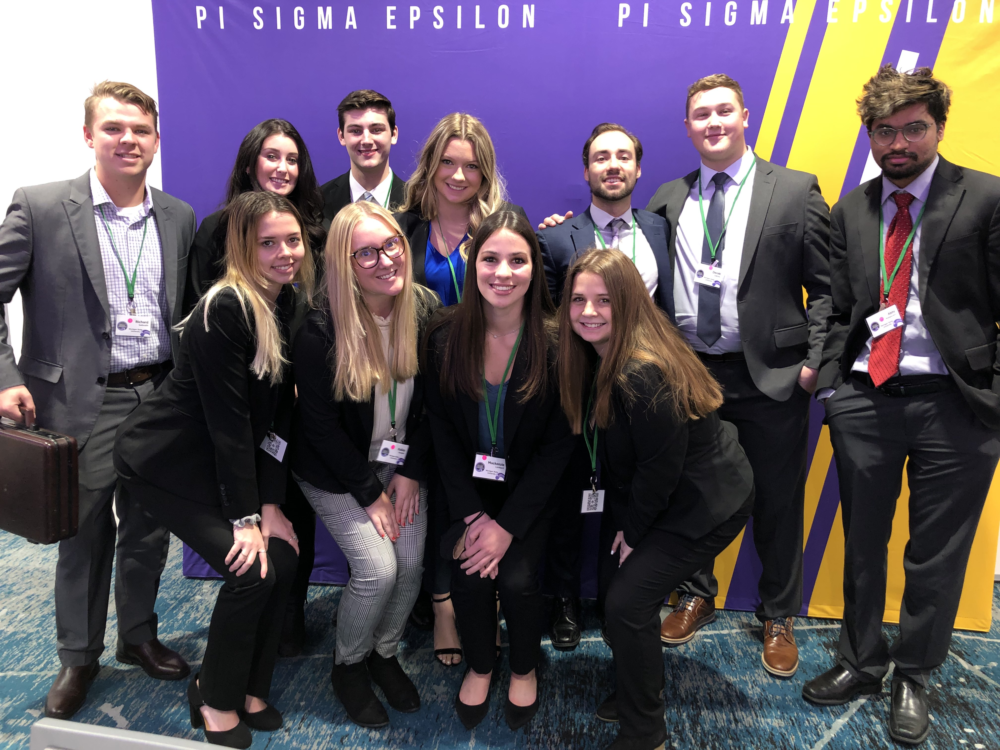
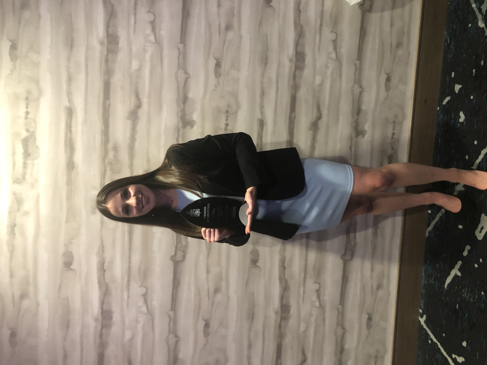

 November 10th-13th, Pi Sigma Epsilon professional business fraternity attended their yearly regional conference in Kalamazoo, Michigan. For 3 days our members competed in business competitions in front of over 20 corporate sponsors and against 12 other Pi Sigma Epsilon chapters across the midwest. The 4 business competitions consisted of a marketing challenge, sports selling, speakers competition, and the most competitive: pro-am sell-athon. The second biggest competition, speakers comp, allows students the opportunity to give a 5 minute “ted-talk” like speech on a topic introduced beforehand in a room of 200 people. The biggest competition, pro-am sell-athon, brought 64 competitors each attempting to sell the same item to an interested buyer in a 12 minute mock sales meeting.
 Along with competing in competitions, we all had the opportunity to network with companies and other ambitious college students from the region. We made a lot of connections and those Linkedin numbers sure saw an increase. Some companies were offering interviews on the spot so there was lots of opportunity to grow professionally. It was a very memorable experience for all members involved! We were able to stay at the Kalamazoo Conference center and also got to witness some memorable keynote speakers!
We had a very successful weekend as we took home a trophy, had a finalist placer, and made a lot of memories. Our very own Mackenzie Lombard, senior management major, was the big winner as she won first place in the speakers competition! She also, out of 64 competitors, was 1 of 8 finalists in the pro-am sell-athon. Nationals are up next in march in beautiful Minneapolis to compete once again in the business competitions, but this time against the nation rather than the region.